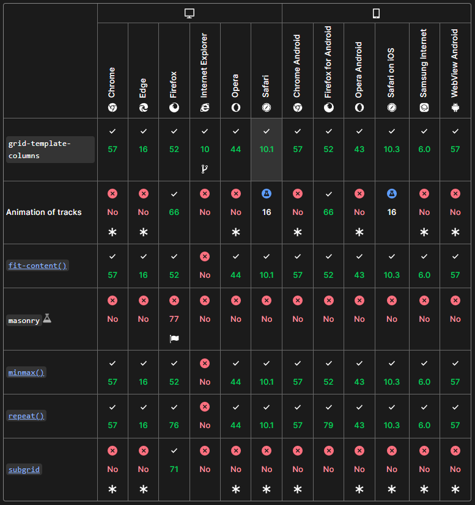

一般来说建议使用flexbox和grid作为main layout method。但是很多时候用户是很老的浏览器，或者说，即使用户用的是最新的浏览器，浏览器之间的支持也不尽相同。
每一个网站的target audience都不一样，有针对手机端的也有针对电脑端的，因此可以根据target audience来对更多用户进行支持。需要注意的是不要钻牛角尖，很多开发者会为了1%的IE8用户下血本调整但是却忘记了更大比例需要无障碍的用户
当使用某些新的css特性时，可以靠着MDN下面的compatility check来检查对应的浏览器支持如下：
但是需要注意的是，support并不代表看的完全一致，因为基于不同设备和不同浏览器，本身就不容易得到一样的外观。因此最重要的是一个html框架。一个不错的评判标准是将网站的css直接去除，光看plain html是否有逻辑
css specification会解释不同layout feature相结合时产生的后果，比如一个item同时被赋予了float和grid，那哪一个会生效。基于这个特性，可以做到fallback effect。一个例子如下，该wrapper为grid，而其下属的item为float。当浏览器支持grid时，float不会生效，但是若不支持就会直接 略过，float生效。
.wrapper {
background-color: rgb(79,185,227);
padding: 10px;
max-width: 400px;
display: grid;
grid-template-columns: 1fr 1fr 1fr;
}
.item {
float: left;
border-radius: 5px;
background-color: rgb(207,232,220);
padding: 1em;
}
但是还有一个问题，也就是如何仅在不支持的时候调整某个feature，就类似media
queries那样。好消息是有办法，办法为@support:
@supports (display: grid) {
.item {
width: auto;
}
}
搞笑的是，@support query的支持度并不是100%的，很多时候不支持grid的浏览器也不支持@support query。